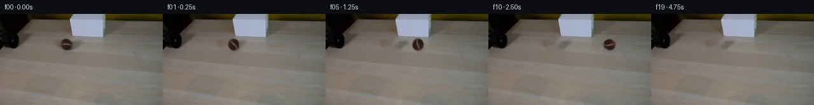

![首帧]()

Round 00
2026-11-05T07:38:49.651799+00:00像素候选变化代码 +160/−0inspection 更新
pixels ba88f2a535eb0f5c · code 3e2a29e5660ce3ef
查看本轮 generate.py 真实 diff
--- previous/generate.py
+++ current/generate.py
@@ -0,0 +1,160 @@
+#!/usr/bin/env python3
+"""Generate the locked-camera rolling-ball continuation from first_frame.png.
+
+Only local pixel operations are used. The photographed ball is turned into a
+soft-edged sprite, the vacated footprint is repaired with OpenCV inpainting,
+and the sprite is rotated/translated over that clean plate with a moving soft
+contact shadow.
+"""
+
+from pathlib import Path
+
+import cv2
+import numpy as np
+from PIL import Image, ImageDraw, ImageFilter
+
+import artifact_io
+
+
+ROOT = Path(__file__).resolve().parent
+W, H = 256, 144
+BALL_CENTER = (104.0, 48.0)
+RADIUS_X, RADIUS_Y = 10.2, 9.4
+CENTERS_X = np.array(
+ [104, 111, 119, 127, 136, 145, 154, 163, 172, 181,
+ 190, 199, 208, 217, 226, 235, 244, 252, 260, 268],
+ dtype=np.float32,
+)
+
+
+def clean_table_plate(first: np.ndarray) -> np.ndarray:
+ """Remove the photographed ball and its shadow from a copy of the plate."""
+ mask = np.zeros((H, W), np.uint8)
+ # Mask is deliberately compact so the lampshade and nearby table grain are
+ # untouched. A second ellipse covers the original contact shadow.
+ cv2.ellipse(mask, (104, 48), (12, 11), 0, 0, 360, 255, -1)
+ cv2.ellipse(mask, (108, 56), (13, 5), 0, 0, 360, 255, -1)
+ mask = cv2.GaussianBlur(mask, (3, 3), 0.55)
+ # TELEA follows the surrounding horizontal wood gradients well at this size.
+ return cv2.inpaint(first, mask, 4.0, cv2.INPAINT_TELEA)
+
+
+def make_ball_sprite(first: np.ndarray, scale: int = 4):
+ """Extract the source ball as a supersampled soft-edged RGBA sprite."""
+ side = 29
+ half = side // 2
+ cx, cy = map(int, BALL_CENTER)
+ rgb = first[cy-half:cy+half+1, cx-half:cx+half+1].copy()
+
+ # Elliptical alpha retains the photographed surface and white seam but not
+ # the old contact shadow. The 1-pixel feather avoids a cutout edge.
+ yy, xx = np.mgrid[0:side, 0:side].astype(np.float32)
+ nx = (xx - half) / RADIUS_X
+ ny = (yy - half) / RADIUS_Y
+ distance = np.sqrt(nx * nx + ny * ny)
+ alpha = np.clip((1.055 - distance) / 0.105, 0.0, 1.0)
+ # Taper the lower-right edge slightly because that side meets the source shadow.
+ alpha[(yy > half + 8.8)] *= 0.75
+
+ rgb_hi = cv2.resize(rgb, (side * scale, side * scale), interpolation=cv2.INTER_CUBIC)
+ alpha_hi = cv2.resize(alpha, (side * scale, side * scale), interpolation=cv2.INTER_CUBIC)
+ return np.clip(rgb_hi, 0, 255).astype(np.float32), np.clip(alpha_hi, 0, 1).astype(np.float32)
+
+
+def rotate_sprite(rgb: np.ndarray, alpha: np.ndarray, degrees: float):
+ """Rotate around the ball center; negative degrees means clockwise roll."""
+ h, w = alpha.shape
+ m = cv2.getRotationMatrix2D(((w - 1) / 2, (h - 1) / 2), degrees, 1.0)
+ rr = cv2.warpAffine(
+ rgb, m, (w, h), flags=cv2.INTER_CUBIC,
+ borderMode=cv2.BORDER_REFLECT_101,
+ )
+ aa = cv2.warpAffine(
+ alpha, m, (w, h), flags=cv2.INTER_CUBIC,
+ borderMode=cv2.BORDER_CONSTANT, borderValue=0,
+ )
+ return np.clip(rr, 0, 255), np.clip(aa, 0, 1)
+
+
+def add_shadow(frame: np.ndarray, center_x: float) -> np.ndarray:
+ """Add a dim, warm-neutral contact shadow consistent with the first frame."""
+ shadow = Image.new("L", (W, H), 0)
+ draw = ImageDraw.Draw(shadow)
+ # Offset right/down as in the source image; clipping happens naturally.
+ draw.ellipse(
+ (center_x - 8.0, 53.0, center_x + 12.0, 59.5),
+ fill=54,
+ )
… diff truncated; 73 more lines …